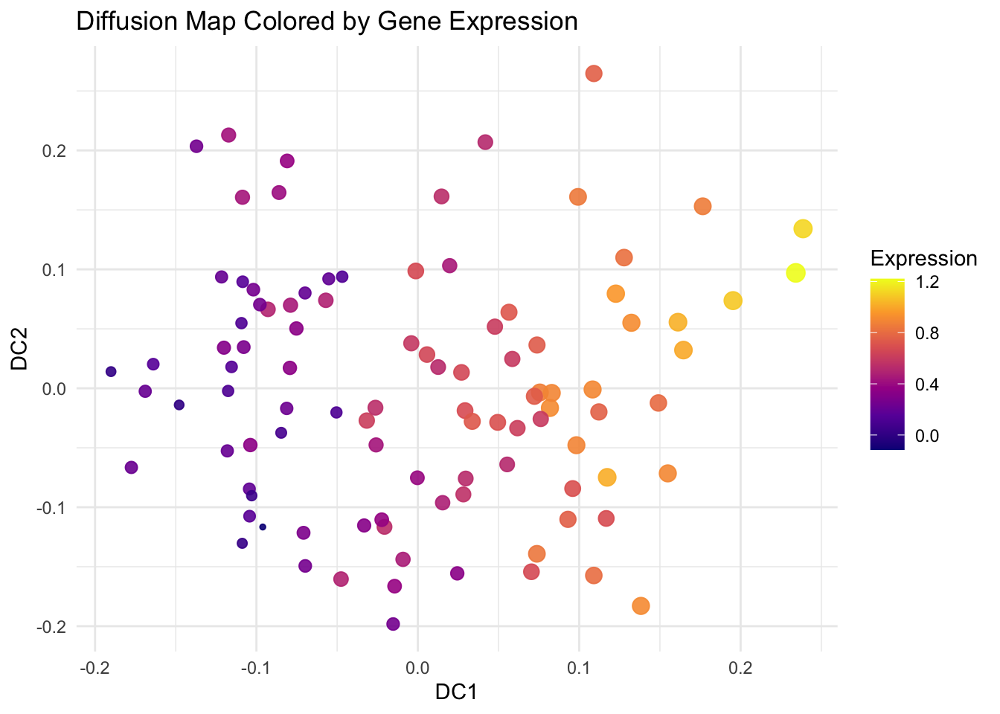

In this tutorial, we explore Diffusion Maps and PHATE, two powerful nonlinear dimensionality reduction techniques that excel in capturing the geometric structure of complex datasets, particularly in life sciences. They are especially useful for continuous processes, such as cell development or biological trajectories.
5.2 Diffusion Maps
Diffusion maps leverage the relationship between heat diffusion and a random walk Markov chain on the dataset. The basic idea is that in a random walk, you’re more likely to step to a nearby point than one farther away.
The connectivity between two points is defined as the probability of transitioning from one to the other in one step, typically via a kernel function. This defines the local geometry and leads to construction of a transition matrix (M) for the Markov chain.
Raising M to higher powers simulates a diffusion process over time, revealing the geometric structure at increasing scales. The parameter t acts as both a time and scale parameter.
The diffusion distance between two points at time t reflects their similarity based on how many short paths connect them. It is robust to noise and integrates all indirect connections—making it suitable for inference tasks.
This distance can be computed from the eigenvectors and eigenvalues of the diffusion matrix.
By keeping only the first k eigenvectors and their eigenvalues (due to spectral decay), the data is embedded in a k-dimensional space. The resulting diffusion map is a nonlinear embedding where Euclidean distances approximate diffusion distances, capturing the intrinsic geometry of the original data.
5.3 Data
library(tidyverse)library(mixOmics)# load datadata(breast.TCGA)x <-rbind(breast.TCGA$data.train$mirna,breast.TCGA$data.test$mirna)labels <-c(breast.TCGA$data.train$subtype,breast.TCGA$data.test$subtype)# scale datax_scaled <-scale(x)# preview data# data dimensionsx |>dim() |>print () # dimensions of the data matrix (samples x features)## [1] 220 184labels |>as.factor() |>summary() # samples per group## Basal Her2 LumA ## 66 44 110# box plots par(mfrow=c(2,1))boxplot(t(x), main="distribution per sample", las=2, cex.axis=0.7, col=rainbow(10), outline=FALSE, cex.main=0.8)boxplot(x, main="distribution per miRNA", las=2, cex.axis=0.7, col=rainbow(10), outline=FALSE, cex.main=0.8)
library(destiny) # main package for diffusion mapsdm <-DiffusionMap(data = x_scaled, sigma ="local") # adaptive kernel width# Key parameters# - sigma: Diffusion scale parameter of the Gaussian kernel# - k: Number of neighbors# - n_eigs: Number of diffusion components to calculate# - density.norm: Density normalization (helps manifold discovery)df_dm <-data.frame(DC1 =eigenvectors(dm)[, 1],DC2 =eigenvectors(dm)[, 2],Subtype = labels)# Visualize First Two Diffusion Componentsggplot(df_dm, aes(x = DC1, y = DC2, color = Subtype)) +geom_point(size =2) +theme_minimal() +labs(title ="Diffusion Map of miRNA Data")# Explore Diffusion Pseudotime (Optional)df_dm$Pseudotime <-eigenvectors(dm)[, 1]ggplot(df_dm, aes(x = DC1, y = DC2, color = Pseudotime)) +geom_point(size =2) +scale_color_viridis_c() +theme_minimal() +labs(title ="Diffusion Pseudotime", color ="Pseudotime")
5.5 Exercise
We have simulated a dataset with 100 cells and 20 genes, where 3 genes have a signal related to pseudotime. Load the data diffmap-sim-gene-expr.csv and run a diffusion map analysis. Could you identify the genes that correlate with the first diffusion component?
Hint:
there should be one gene highly positively correlated with the first diffusion component and one negatively correlated.
Example code
library(tidyverse)library(destiny)library(viridis)# Load the simulated dataexpr_data <-read_csv("data/diffmap-sim-gene-expr.csv")# scale datax <-scale(expr_data)# Run Diffusion Mapdm <-DiffusionMap(data = x, sigma ="local") # adaptive kernel widthdf_dm <-data.frame(DC1 =eigenvectors(dm)[, 1],DC2 =eigenvectors(dm)[, 2])# Visualize First Two Diffusion Componentsggplot(df_dm, aes(x = DC1, y = DC2)) +geom_point(size =2) +theme_minimal() +labs(title ="Diffusion Map of miRNA Data")# Explore Diffusion Pseudotime (Optional)df_dm$Pseudotime <-eigenvectors(dm)[, 1]ggplot(df_dm, aes(x = DC1, y = DC2, color = Pseudotime)) +geom_point(size =2) +scale_color_viridis_c() +theme_minimal() +labs(title ="Diffusion Pseudotime", color ="Pseudotime")
# find genes positively and negatively correlated with DC1dc1 <-eigenvectors(dm)[, 1]# Correlate each gene with DC1cor_with_dc1 <-apply(x, 2, function(g) cor(g, dc1))# top genes positively correlated with DC1cor_with_dc1_sorted <-sort(cor_with_dc1, decreasing =TRUE)head(cor_with_dc1_sorted, 5)## Gene18 Gene15 Gene9 Gene1 Gene20 ## 0.91409842 0.31069956 0.18258365 0.09695313 0.08421495# color code UMAP by the expression of the correlated geneslibrary(viridis)ggplot(df_dm, aes(x = DC1, y = DC2, color = expr_data$Gene5, size = expr_data$Gene5)) +geom_point(alpha =0.9) +scale_color_viridis_c(option ="plasma", name ="Expression") +scale_size(range =c(1, 4), guide ="none") +theme_minimal() +labs(title ="Diffusion Map Colored by Gene Expression",x ="DC1", y ="DC2" )# top genes negatively correlated with DC1cor_with_dc1_sorted <-sort(cor_with_dc1, decreasing =FALSE)head(cor_with_dc1_sorted, 5)## Gene7 Gene12 Gene19 Gene2 Gene8 ## -0.9155005 -0.2076297 -0.1958369 -0.1670577 -0.1650107# color code UMAP by the expression of the correlated genesggplot(df_dm, aes(x = DC1, y = DC2, color = expr_data$Gene18, size = expr_data$Gene18)) +geom_point(alpha =0.9) +scale_color_viridis_c(option ="plasma", name ="Expression") +scale_size(range =c(1, 4), guide ="none") +theme_minimal() +labs(title ="Diffusion Map Colored by Gene Expression",x ="DC1", y ="DC2" )

5.6 Additional resources
PHATE (Potential of Heat-diffusion for Affinity-based Transition Embedding) aims to capture both local and global nonlinear structure by using an information-geometric distance derived from a heat-diffusion process. PHATE builds on diffusion maps by modeling data as a diffusion process but introduces key innovations like automatic selection of diffusion time and a log-transformed “potential distance” to better preserve both local and global structure. Unlike diffusion maps, which use eigenvectors for embedding, PHATE applies non-metric multidimensional scaling for improved visualization of trajectories and branching structures